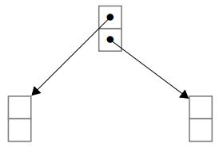
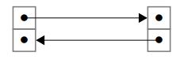
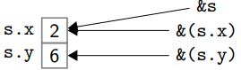
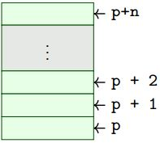

Template and style original:
Comparing C, C++ and Java.
They all have core imperative language that includes assignment
while, functions and recursion.
C and C++ are about efficiency and control over memory. Being aware of memory is important!
C is low-level compared to other languages like Java, OCaml, Haskell, which are all type-safe and garbage collected. However, C is high-level compared to assembly language. C is just halfway between high level languages and machine code. Compiled code is a mess of pointers.
A C program consists essentially of some #includes, function definitions and one of them is a main, type declarations (most importantly structs), and perhaps some global variables.
Abstraction mechanisms are largely absent in C, but were added in C++.
There are no classes or other ways to structure large programs. A program can be split into many files, compiled separately.
A header file (extension .h) works as a kind of interface that has type information but no implementation. We need to include headers to use library functions. Header files can contain function declarations or sometimes called prototypes and structure definitions.
#include <stdlib.h>
#include "file.h"
C does not have any exceptions. So need to check function return values to see whether an operation has succeeded. If not, then return values like -1, or NULL pointer.
There are C library functions like setjmp and longjmp that are a very crude version of exceptions. C++ has exceptions much like Java.
C does not have classes. So functions are defined directly inside the file. Splitting into files is up to the programmer.
public class HelloWorld {
public static void main (String[] args) {
System.out.println("Hello world!");
}
}
#include <stdio.h>
int main(int argc, char *argv[]) {
printf("Hello world!");
return 0;
}
A function in C is like a method in Java without any objects. Just like public static.
A while loop in C is typically faster than using recursion and uses less stack space, particularly when the function is not tail recursive.
Pointers are the fundamental feature of C compared to other languages. Pointers are everywhere in C:
* & . -> == malloc free struct = ++ -- (*f) () Basic imperative programming is an abstraction of the memory as named boxes that contain values.
x = x + 1;
We can imagine these equation is made up of two parts, the L and R values.
The x on the left of the = refers to the address of x, the L value.
The x on the right of the = refers to the contents of x, the R value.
Pointers are an abstraction of machine addresses. Addresses are at a hardware level, but in C, we are not supposed to care about actual hardware addresses. It is easier to visualise C memory as a graph where nodes are the chunks of memory (often a struct) and edges are pointers.
In C, * is also a unary operator which has nothing to do with the binary infix operator for multiplication.
If P is an expression denoting a pointer, then *P is the result of dereferencing the pointer.
If T is a type, then T *p declares p to be of type "pointer to T".
If T is a type, then T* is the type of pointers to something of type T. This is used for example in casting.
Pointer is a programming abstraction of machine address in main memory.
Dereferencing is to load value from memory.
If a variable appears on the right side of an =, then its R-value is taken.
If we want the address of member x rather than its contents, we use the & operator, so &x.
y = x; // means y get the contents of x
p = &x; // means p is made to point to x
// So *&x is essentially the same thing as x .
Example codes from the slides (Click images to reveal answer)
In C, two pointers are == if they refer to the same address in memory. Pointer equality is different from structural equality like that built into functional languages such as OCaml.
# [ 1 ] = [ 1 ] ;;
- : bool = true
p = q // makes p == q because p takes the address of q
*p = *q // does not make p == q because *p will have a different address from *q.
NULL pointer is a special value that does not point to anything. Dereferencing NULL gives undefined behaviour (usually crash). A typical idiom to test whether a pointer p is equal to the NULL pointer:
if (p) ...
// Note that pointers are not always initialized to null.
Pointer Equality Example 1

Pointer Equality Example 2

Pointer Equality Example 3

Pointer Equality Example 4

It is important to note when declaring a pointer, the * sticks to the variable and not to the type. Array declarations behave the same, sticking only to one identifier
int *p, n;
// Is the same as
int *p;
int n;
// and not
int *p;
int *n;
// The * sticks only to the p and not the int
Pointer Exercise

stdlib.h provides C functions malloc and free.
malloc - p = malloc(sizeof(N));free - free(p);free, the memory is no longer owned by the program. The part of memory managed by malloc is called the
malloc gets a chunk from the free list and returns a pointer to it. free takes a pointer to a chunk and links it back to the "free list". After free is called on some memory, various things may happen. The same piece of memory is re-used in a later malloc, or the memory manager puts the memory into the "free list". This is called
The operator sizeof(T) gives the
stdlib.h also contains other variants of malloc:
calloc to allocate and initialise to zeros realloc to reallocate
int *p1, **p2;
p1 = malloc(sizeof(int));
*p1 = 7;
p2 = malloc(sizeof(int*));
p2* = p1;
free(p1);
int *p1, **p2;
p1 = malloc(sizeof(int));
*p1 = 7;
p2 = malloc(sizeof(int*));
*p2 = p1;
free(p1);
**p2 = 11; // This will cause undefined behaviour because we freed before
int *p1, **p2;
p1 = malloc(sizeof(int));
*p1 = 7;
p2 = malloc(sizeof(int*));
*p2 = p1;
free(p1);
p1 = NULL;
free(*p2); // This will also cause undefined behaviour because we freed before
Keep in mind that you can only free something you malloc before.
int *p1, **p2;
p1 = malloc(sizeof(int));
*p1 = 7;
p2 = malloc(sizeof(int*));
*p2 = p1;
p1 = NULL;
p2 = NULL; // This will cause the 7 and its pointer to be unreachable, hence memory leak
A C program with
Memory errors and leaks are not necessarily observable and not deterministic.
Valgrind is an instrumentation framework for building dynamic analysis tools. There are Valgrind tools that can automatically detect many memory management and threading bugs, and profile your programs in detail.
In C, memory becomes free.
O RLY? YA RLY -Hayo Thielecke
Valgrind makes memory errors and leaks
A struct in C is much like a Java class that contains only data without methods.
A struct contains
In C++, structs can contain functions, hence gives object orientation.
struct s {
T1 m1; // type name and member declared here
...
Tk mk;
}; // dont forget the semi colon after ending a struct declaration
struct s y; // declares y as a struct s
struct s *p; // declares p as a pointer to struct s
Access to structure member by using the
struct Point {
int x, y;
};
struct Point p;
p.x = p.y; // this accesses struct Point's x member and assigns it to p.y
In terms of memory, these struct members are laid out in order:
The grey area may represent few bytes of
Hence
sizeof(struct s) ≥ sizeof(T1) + ... + sizeof(Tk)
struct IntList {
int data; // contains integer data
struct IntList * next; // and a pointer to the tail of the list
}
struct BinTree {
int data;
struct BinTree * left, * right; // pointer to the left and right children
}
struct QuadTree {
int data;
struct QuadTree * child[4]; // pointer to the array of children
}
-> operator p -> m is an abbreviation for (*p).m. It does:
p;m access.Can also do chaining:
p -> m1 -> m2 -> ... -> mk
Could also use this to call member functions in C++.
It is common to use a while loop to traverse lists.
while (p) { ... }
// is equivalent to
while (p != NULL) { ... }
// and to traverse the list, at most cases we add this:
while (p) {
...
p = p -> next; // the next loop will start using p -> next.
}
while (p) {
q = p; // assign q to hold the pointer p
p = p -> next; // next recursion will be using p -> next
free(q); // and finally free q
}
// explanation: this idiom starts with a pointer to a head, and at each
// recursion, it frees the current head and moves on to free the tail.
// THIS BELOW IS WRONG
while (p) {
free(p);
p -> next; // Wrong because we are trying to use p after freeing it
}
// A typical example of use-after-free
For traversing
They are made from the
// This part is the same for both data structures
struct Twoptrs {
struct Twoptrs *one, *two;
};
struct Twoptrs *p1 = malloc(sizeof(struct Twoptrs));
struct Twoptrs *p2 = malloc(sizeof(struct Twoptrs));
struct Twoptrs *p3 = malloc(sizeof(struct Twoptrs));
// for TREE
p3 -> one = p1;
p3 -> two = p2;

// for DOUBLY-LINKED LIST
p1 -> one = p2;
p2 -> two = p1;

For doubly-linked lists:
void delete(struct doublylinked *p) {
if (!p) return;
if (p -> prev) p -> prev -> next = p -> next;
if (p -> next) p -> next -> prev = p -> prev;
free(p);
}
The address operator can be applied to structure members.
An alternative to define structures, but it is optional to use.
typedef
struct s { // declare typedef before struct
...
} Type; // this will be the name of the type. Just like class names in java
Type *p; // declares p as a pointer to the structure Type
int main() {
struct s {
int x, y;
}
struct s a;
// True or false?
printf("Q1: ");
if (&a == &(a.x)) printf("True\n");
else printf("False\n");
printf("Q2: ");
if (&a == &(a.y)) printf("True\n");
else printf("False\n");
return 0;
}
Click to run code for answer
>_
A
\0)In C, adding a pointer and an integer is allowed, but not adding two pointers.
Accessing arrays require pointer arithmetic. p + n means n is scaled up by the size of the type of what p points to.
Array Indexing
a[i]
is short for
*(a + 1)
The diagram below shows the memory of some array.
 The upper part represents higher addresses. Each of the cells is sizeof(T) wide if p is of type T. Pointer arithmetic is
In C, postfix operators
*p++ // the * is prefix, the ++ is postfix
// is parsed like
*(p++)
// similarly,
*f()
// is parsed like
*(f())
*p++(*p)++Analyse and determine what these codes do.
int a[10], *p;// what does each of these do? p = a + 2; p++; (*p)--; --*p; *--p; *p = *p * *p;
Click to show answers// points to the item after next in the array // increments the pointer // decrements the value p is pointing to // predecrement the value p is pointing to // predecrement the pointer, give the value // ERROR cannot multiply pointers.
This is an idiom from Kernighan and Ritchie.
while(*p++ = *q++); // where p and q are pointers to a string
This does
This shows an application of the idiom.
void mystrcopy(char *p, char *q)
{
while(*p++ = *q++);
}
char from[] = "abc";
char to[4];
mystrcopy(to, from);
This below shows a bad application of the idiom as it causes an overflow.
void mystrcopy(char *p, char *q)
{
while(*p++ = *q++);
}
char a[] = "abc";
char b[2];
mystrcopy(b, a);
Where x, y, z are some other things inside memory. Could be something useful that keeps the computer running. And this overflow causes it to be replaced.
The call stack grows towards
strncpy() and fgets(). C does not perform bounds check when accessing array, contrast to Java, which will throw exceptions. If you get an overflow, then an
Basically just
main takes two arguments
main(int argc, char *argv[]) { ... }
main(int argc, char **argv) { ... }
If we don't need arguments, then no need to use it. Just main() { ... }. But we cannot do this in C++.
Keep in mind that the + operator is not overloading of the string concatenation as in Java. So:
int n = 6;
printf("The value of n is " + n);
// output: lue of n is
// because pointer arithmetic:
// add 6 to the start of the string,
// and then print it out.
// So the right way is to do this
printf("The value of n is %d", n);
// output: The value of n is 6
Basically an
Consists of two main functions:
push() // pushes an item to the top of the stack pop() // pops an item from the top of the stack Here is a typical way to make those functions:
int stack[100]; int *sp = stack;// invariant: sp points to first free element void push(int n) { if (sp < stack + stacksize - 1) *sp++ = n; else { fprintf(stderr, "Stack overflow!\n\n"); exit(1); } } void pop() { if (sp > stack) return *--sp; else { fprintf(stderr, "Stack overflow!\n\n"); exit(1); } }